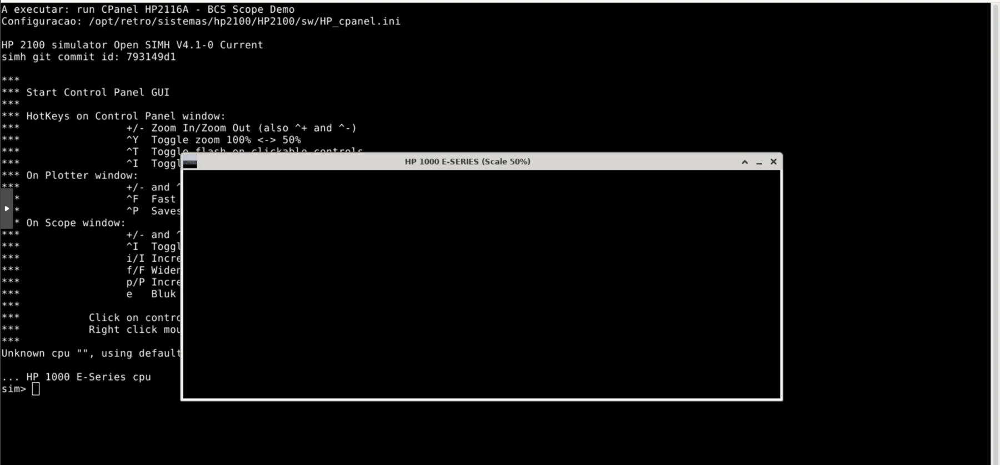
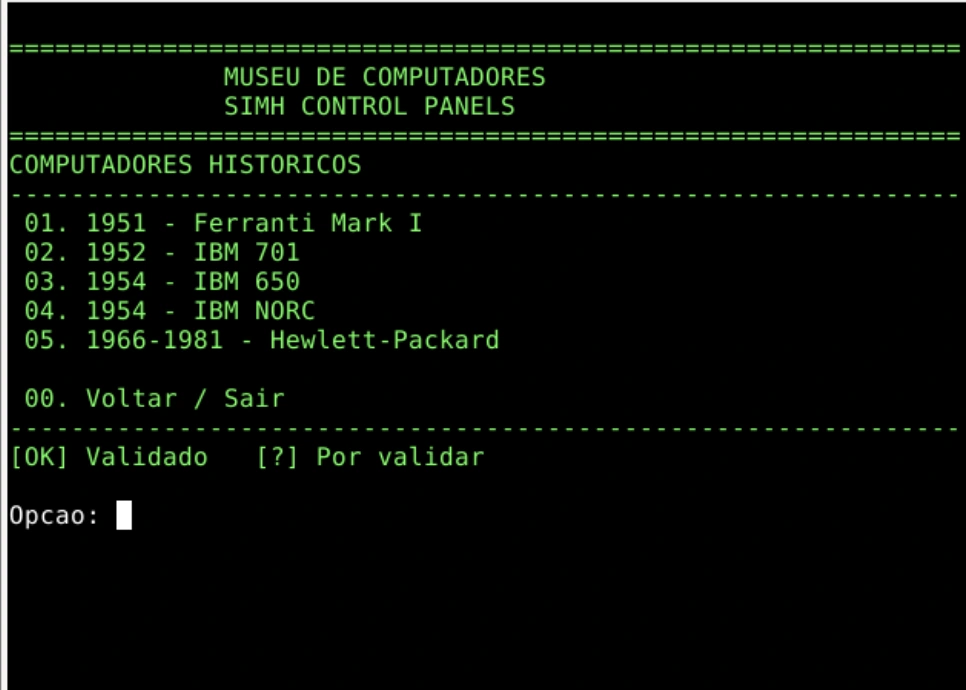

1. Um simulador, vários modelos

Ao escolher HP 2116C MSU BASIC, o simulador apresentou Unknown cpu e arrancou no HP 1000 E-Series. A captura valida o desenho do painel, não o arranque do BASIC ou a seleção correta do modelo.
2. Compilação em Debian 13
O alvo correto é hp2100. O makefile referenciava oito fontes inexistentes. A lista foi reconstruída a partir de Visual Studio Projects/HP2100.vcxproj, incluindo hp2100_fp.c, hp2100_fp1.c e hp2100_stddev.c. Acrescentou-se CPANEL_EXTRALIBS à regra de ligação para resolver as referências SDL2.
cd /opt/retro/emuladores/SimH_cpanel/simh-master
make hp2100 -j2 CFLAGS_G="-I /usr/include/SDL2 -fcommon -DMAX_PATH=260 -Wno-error=incompatible-pointer-types" VIDEO_USEFUL=trueA compilação terminou com Good Registers in HP 2100 simulator. A incompatibilidade char ** / const char ** em strtotv permanece como aviso; não foi corrigida definitivamente.
3. Arranque gráfico e problemas pendentes

O ficheiro HP2100.ini tinha capitalização diferente da procurada. Foi criado um link simbólico. A escala de 47% mostrou o painel; a causa do ecrã preto não foi isolada.
cd /opt/retro/sistemas/hp2100/HP2100/cpanel
ln -s HP2100.ini hp2100.ini
# Exemplo de argumentos do BAT original:
hp2100 HP_cpanel.ini 2116A BCS run_scope_demo.iniA transmissão e interpretação dos argumentos pelo menu ainda não estão validadas. Não se considera nenhum sistema operativo HP testado.
4. Catálogo de demonstrações
| Família | Modos disponíveis no pacote (por validar) |
|---|---|
| HP 2116 A/B/C | BCS, ALGOL Chess, Paper Tape BASIC, jogos, plotter, MSU BASIC, RTE |
| HP 2115A / 2114B | DOS, MTS e BASIC |
| HP 2100 A/S | DOS-M, SuperBASIC, DOS-III, RTE-B/C, osciloscópio, Mandelbrot |
| HP 21MX M/E | RTE-II / IV, gráficos e Tie Fighter |
| HP 1000 M/E/F | RTE-III, IVB, 6VM, BASIC1000 e demonstrações gráficas |
5. Menu SIMH CPanel — Museu de Computadores

Foi criado o comando retro-paineis e o atalho Museu de Computadores no XFCE. O menu organiza a HP por família, modelo e demonstração, mantendo os restantes computadores em secções próprias. A navegação funciona; o lançamento HP necessita de correção adicional.
retro-paineisO menu reúne Ferranti Mark I, IBM 701, IBM 650, IBM NORC e Hewlett-Packard. A HP tem submenus por família, modelo e demonstração. O menu distingue os modos validados dos que ainda estão por testar e não substitui o menu SIMH clássico.
Referência
SIMH CPanel — repositório original. Testes na VM 1951 retro-panels, Debian 13 XFCE, GCC 14.2.0 e SDL2.